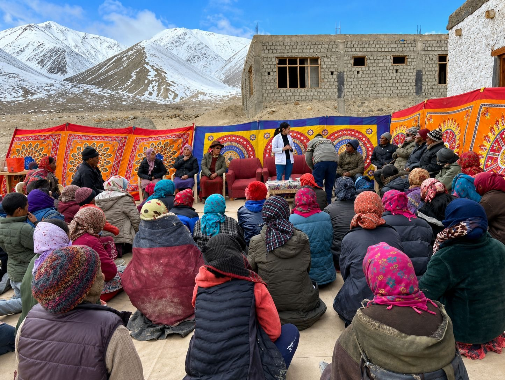
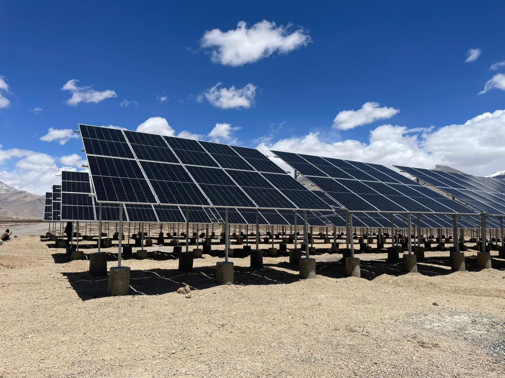
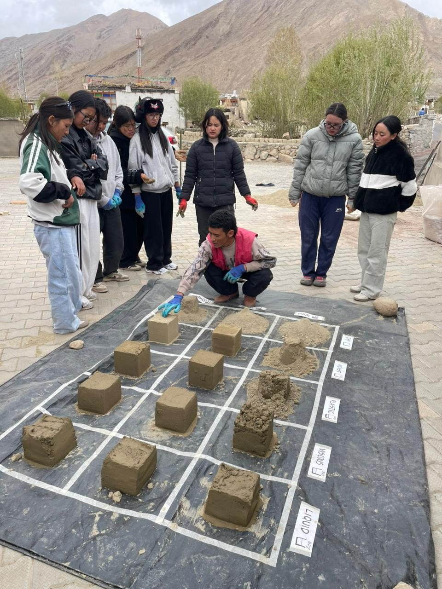
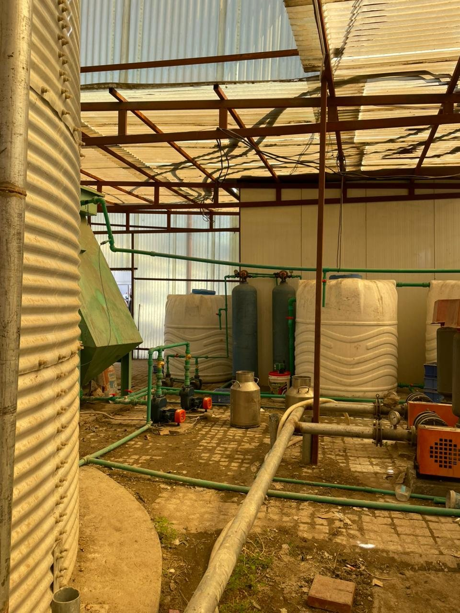
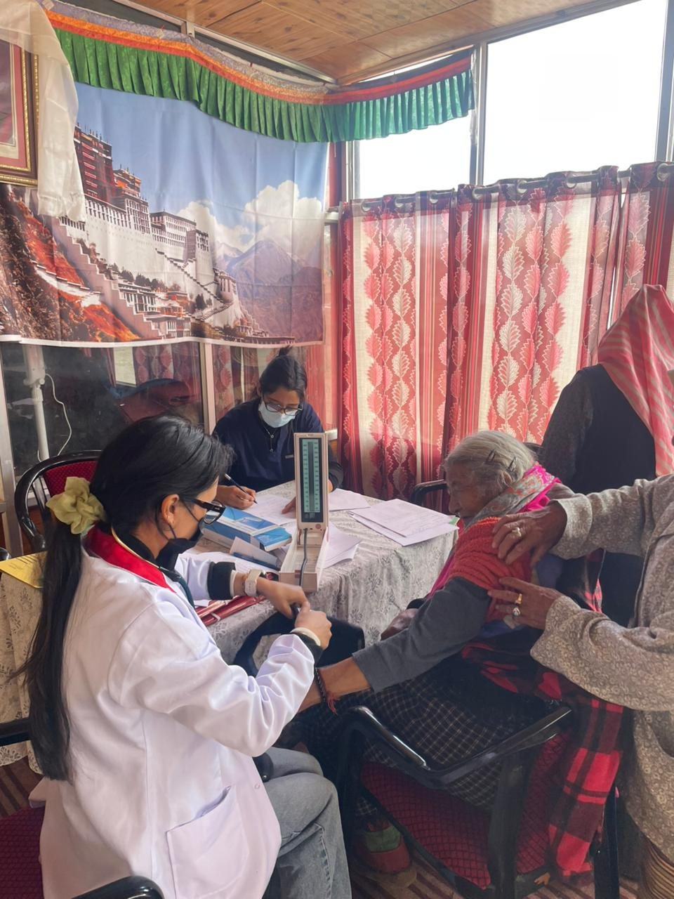
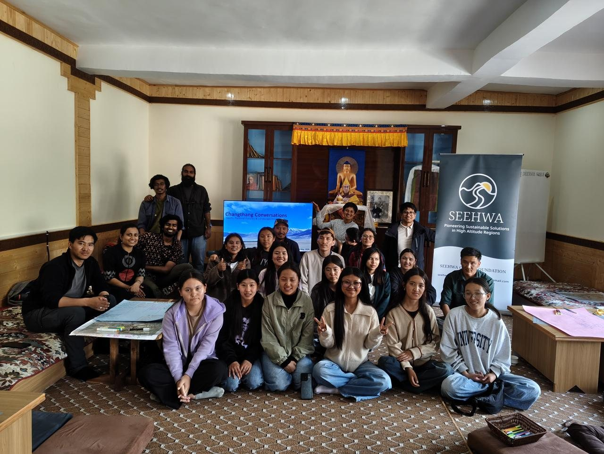

Work
Focus areasfor resilientmountain systems.
SEEHWA's work is organized around practical focus areas for high-altitude regions: climate resilience, clean energy and cold-climate HVAC, ecology, circular water and waste systems, agri-ecology, health access, and livelihood-centered rural development.
Work focus area shortcuts
Focus Areas
Section-wise viewof SEEHWA'swork.
Use this page as a compact map of what SEEHWA does. Each focus area is separated into its own section so stakeholders can quickly understand where they can collaborate, contribute or support implementation.
01 / Sustainability & Climate Resilience
Planning mountain communities for net-zero, circular and adaptive futures.
SEEHWA combines sustainability and climate resilience because fragile high-altitude regions need both mitigation and adaptation at the same time. The work focuses on holistic planning centered on net-zero emissions, resource circularity, low-impact design, adaptive infrastructure, community resilience planning and ecosystem-based approaches.
- Climate-sensitive settlement and infrastructure planning.
- Net-zero and circular economy models for remote mountain communities.
- Community resilience planning for water stress, harsh winters and shifting livelihoods.
- Applied research and advisory inputs for climate-responsive development.

02 / Energy & HVAC
Clean energy and low-energy comfort systems for extreme cold.
SEEHWA combines renewable energy and HVAC because high-altitude reliability depends on both clean power and efficient thermal comfort. The work covers renewable systems, passive solar buildings, decentralized microgrids, low-energy heating and ventilation, and climate-responsive construction suited to cold, remote and energy-sensitive regions.
- Solar and renewable energy planning for off-grid and semi-grid settlements.
- Passive solar design, building-level energy efficiency and cold-climate retrofits.
- Decentralized microgrid concepts for community infrastructure.
- Low-energy heating and ventilation systems for homes, institutions and community spaces.
- Technical advisory that links health, comfort, energy demand and day-to-day livability.

03 / Ecology
Regenerating fragile ecosystems through nature-based solutions.
SEEHWA's ecology work focuses on ecosystem regeneration, biodiversity conservation and nature-based solutions. In mountain regions, ecological stability directly affects water, agriculture, settlement safety, health and livelihoods.
- Ecological restoration and regeneration planning.
- Biodiversity-sensitive project design and conservation support.
- Watershed, soil and land-use sensitivity inputs.
- Nature-based solutions for climate and development challenges.

04 / Water & Waste Management
Circular systems for water, sanitation and waste.
SEEHWA works on circular water systems, greywater reuse, sanitation and zero-waste solutions. The focus is on systems that reduce pressure on fragile ecosystems while improving basic services and local quality of life.
- Greywater reuse, sanitation and decentralized treatment systems.
- Solid waste reduction, segregation and zero-waste planning.
- Water security approaches suited to cold and dry mountain settlements.
- Technical support for institutions, community facilities and rural infrastructure.

05 / Agri-Ecology
Climate-smart agriculture rooted in regenerative practice.
SEEHWA supports climate-smart agriculture, organic farming, composting and regenerative practices. Agri-ecology is treated as a bridge between food security, soil health, traditional knowledge, livelihood resilience and ecological regeneration.
- Organic and low-input farming practices for cold-arid conditions.
- Composting and circular organic resource reuse.
- Support for regenerative agriculture and soil health.
- Integration of local agricultural knowledge with climate-smart methods.
06 / Health
Strengthening preventive care and last-mile health access.
SEEHWA works on community-based healthcare access, preventive care and strengthening last-mile health infrastructure in remote high-altitude settlements. Health work is connected to water, sanitation, housing, mobility, climate stress and local institutional capacity.
- Community health access and preventive care initiatives.
- Health camps, awareness and local screening support.
- Data-informed understanding of last-mile health needs.
- Healthcare infrastructure support for remote settlements.

07 / Livelihood & Integrated Rural Development
Building infrastructure, education access and income pathways together.
SEEHWA approaches livelihood and rural development as an integrated system: strengthening physical infrastructure, expanding access to education, and promoting income generation for sustainable livelihoods and holistic wellbeing.
- Integrated village and rural development planning.
- Infrastructure support connected to wellbeing, mobility and access.
- Education access and local capacity-building pathways.
- Income generation linked to ecological, cultural and local strengths.

Collaborate
Work with SEEHWA on implementation, research or field partnerships.
SEEHWA welcomes technical collaborators, CSR partners, institutions, volunteers and interns who can contribute to practical work in Ladakh and other high-altitude regions.